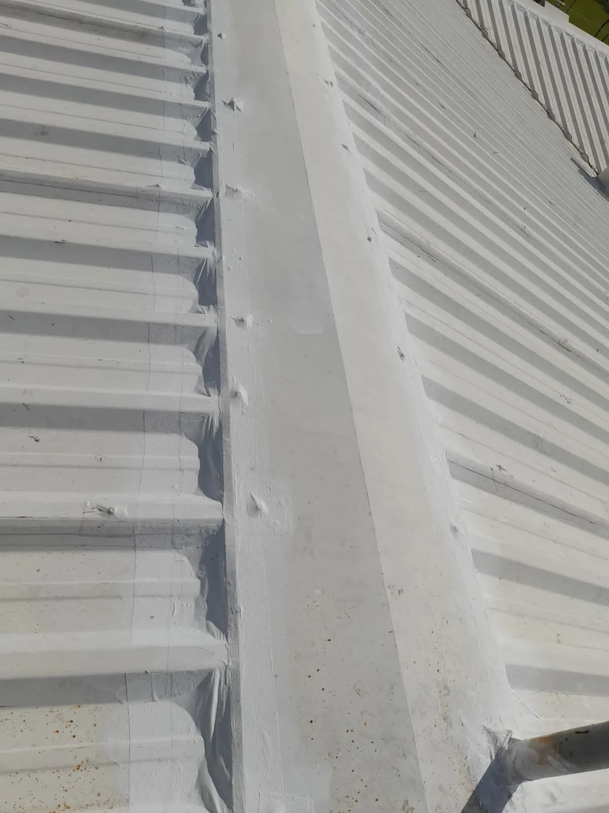

Medido por termografia
Na mesma cobertura e no mesmo instante: 58,9 °C na área sem aplicação e 25,8 °C na área com DUROSHIELD® COOL.

DUROSHIELD® COOL é um sistema elastomérico de alta espessura, à base de resinas acrílicas de última geração e microesferas poliméricas ocas, isento de solventes. É um revestimento de proteção do substrato, com excelente refletividade, alta flexibilidade e alongamento, garantindo a redução térmica, estanqueidade e impermeabilidade da superfície.
Na mesma cobertura e no mesmo instante: 58,9 °C na área sem aplicação e 25,8 °C na área com DUROSHIELD® COOL.
Menos carga térmica na cobertura significa menos consumo de climatização dentro da planta.
Proteção contra corrosão, bactérias e fungos.
Sistema reconhecido pelo Green Building Council Brasil (GBC Brasil).
Diferença de 33,1 °C na superfície da cobertura. Menos carga térmica significa menos energia de climatização dentro da planta.
Poliureia estrutural.
Revestimento protetivo para coberturas.
Epóxi modificado aplicado a spray, camada única de 0,4 a 4 mm. Alta resistência química, mecânica e a altas temperaturas.
Diagnóstico técnico sem custo. Um engenheiro avalia sua estrutura e apresenta o sistema, o cronograma e o prazo de garantia — por escrito.
Solicitar diagnóstico técnicoConteúdo técnico desta página transcrito da Ficha técnica DUROSHIELD® COOL, publicada pela Duroshield Spray Systems.